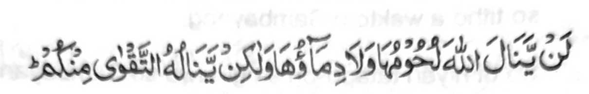

Madakel a manga tao a ipethindeg iran so Sambayang ago madakel kiran pen a sisiyapen niran pen so barajoma ogaid na ipethindeg iran sa di tarotop na taman sa kena ba giyabo a da iran kakowa-a ko manga balas ago manga limo (a ipembegay) sabap kiran, ka da matarima sekaniyan (a Sambayang).
Kena ba giyangka-iya miya-aloy na ba peman lagid o kabagak sa Sambayang, a so kiyakenala tano ron na tanto a minitaralo so dosa on. Makimpen miyapapas tano ko manga balas ko kipephamayandegen ko Sambayang sa di tarotop, a da mambo tarima-a, ogaid na miyakalidas tano ko dosa ko kindadarai-nonen ago kapezopaka tano ko manga sogo-an o Allah.
Ogaid, na sagitiyambo ka sominggay tano so manga oras tano, na inawa-an tano so manga galebek tano na meromasay tano, na ino tanoto di ziyapa a makowa tano so miyakapiya-piya a balas pantag o manga oras tano ago so galebek tano a nggolalan ko kipethindegen ko Sambayang ko pithamanan a mapiya a khagaga tano.
Giyangka-iya a ika telo ba-ad na biyagi sa telo a pinto:

“Diden izampay ko Allah so manga sapo iran, go so manga rogo iran: Na oga-id na izampay ron so kapangongonotan a pho-on rekano...” (Surah Al-Hajj: 37)
Minsan pen giyangka-iya Ayaat na si-i maka-antap ko ayam a pikhorban, oga-id na so ‘enda-o niyan na khapakay ko manga ped a simba. Si-i matatago ko kapagi-ikhlas go so kathotomangked ko simba i ron pagilaya o Allah so katharima-a Niyan non.